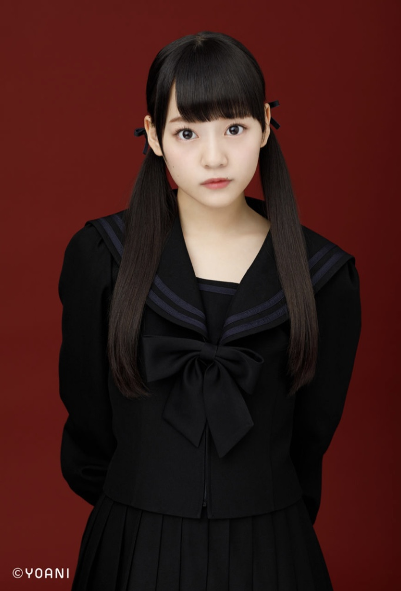
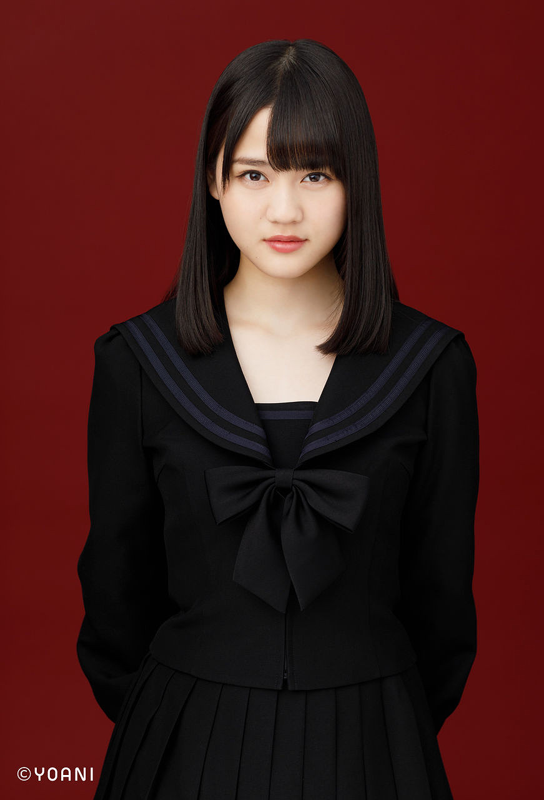

ホーム
楽曲一覧
=LOVE
僕らの制服クリスマス
手遅れcaution
Want you！Want you！
探せ ダイアモンドリリー
ズルいよズルいね
CAMEO
青春“サブリミナル”
全部、内緒
ウィークエンドシトロン
The 5th
あの子コンプレックス
Be Selfish
この空がトリガー
ナツマトペ
ラストノートしか知らない
呪って呪って
絶対アイドル辞めないで
見なくて良い
手遅れcation
手遅れcation
部活
樹愛羅、助けに来たぞ
大谷 映美里
大場 花菜
音嶋 莉沙
齋藤 樹愛羅

齊藤 なぎさ
佐々木 舞香
佐竹 のん乃

髙松 瞳
瀧脇 笙古
野口 衣織
諸橋 沙夏
山本 杏奈